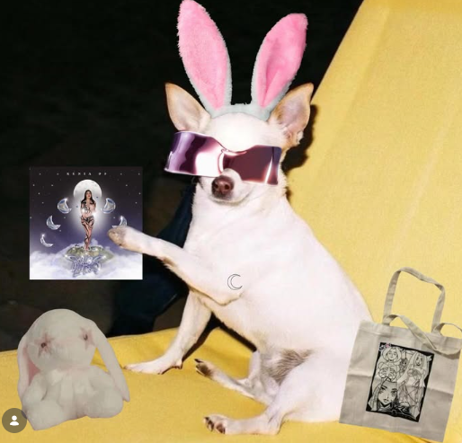

- 25 de abril de 2026-Mazatlán-Estadio Teodoro Mariscal
- 1 de mayo de 2026-Mérida-Foro GNP Seguros
- 16 de mayo de 2026-León-Mega Velaria
- 17 de mayo de 2026-Ciudad de México-Tecate Emblema
- 23 de mayo de 2026-Chihuahua-Teatro del Pueblo
- 30 de mayo de 2026-Monterrey-Estadio Borregos
- 31 de julio de 2026-Cd del Carmen-Concha Acustica
- 8 de agosto de 2026-Rosarito-Playas de Rosarito
- Fecha a confirmar 2026-Acapulco-Playa Tamarindos
- Agosto 2026 (día por confirmar)-San Luis Potosí-Palenque de la Feria Nacional Potosina
- Playa del Carmen (proximamente)
